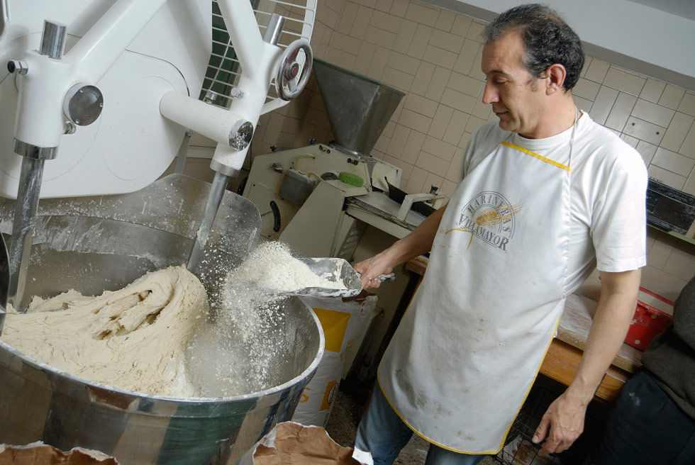
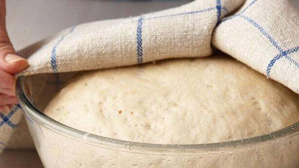
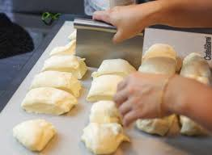

Recepcion y almacnamiento de materias primas.
- Ingredientes principales: Harina, agua, levadura, sal y aditivos (como mejoradores de masa o conservantes).
- Control de calidad: Se verifica la calidad de las materias primas antes de su uso.
- Almacenamiento: Los ingredientes se almacenan en condiciones controladas (temperatura y humedad) para mantener su frescura.
Dosificacion y mezcla.
- Dosificación: Los ingredientes se pesan y dosifican automáticamente según la receta.
- Mezcla: La harina, el agua, la levadura y otros ingredientes se mezclan en una amasadora industrial hasta obtener una masa homogénea.

Fermentación (primera fermentación)
- La masa se deja reposar en cámaras de fermentación controladas (temperatura y humedad).
- Durante esta fase, la levadura actúa, produciendo gases que hacen que la masa aumente de volumen.
- Tiempo aproximado: 1-2 horas, dependiendo de la receta.

División y boleado
- División: La masa se divide en porciones del tamaño deseado usando una divisora automática.
- Boleado: Cada porción se redondea para darle forma inicial y tensar la superficie.

Reposo (segunda fermentación)
- Las porciones de masa se dejan reposar brevemente (10-20 minutos) para relajar el gluten y facilitar el moldeado.

Moldeado
- La masa se moldea según el tipo de pan (barras, hogazas, pan de molde, etc.) usando máquinas moldeadoras.
- Para panes especiales, se pueden agregar ingredientes adicionales (semillas, frutos secos, etc.).

Fermentación final (probadora)
- La masa moldeada se coloca en cámaras de fermentación (probadora) con condiciones controladas de temperatura (30-35°C) y humedad (70-80%).
- Tiempo aproximado: 30-60 minutos.
- Durante esta fase, la masa aumenta su volumen antes del horneado.

Horneado
- La masa fermentada se hornea en hornos industriales a temperaturas entre 180°C y 250°C.
-
Proceso:
- Formación de la corteza: El calor seca la superficie, formando la corteza.
- Cocción interna: El calor cocina el interior, fijando la estructura del pan.
- Tiempo de horneado: Varía según el tipo de pan (15-30 minutos para panes pequeños, hasta 1 hora para panes grandes).

Enfriamiento
- El pan se retira del horno y se deja enfriar en cintas transportadoras o estanterías.
- Durante el enfriamiento, la miga se estabiliza y la corteza se endurece.
Almacenamiento y distribución
- El pan se almacena en áreas controladas antes de ser enviado a los puntos de venta.
- En algunos casos, se utiliza congelación rápida para prolongar la vida útil del pan.

Control de calidad
- Durante todo el proceso, se realizan controles de calidad para asegurar que el pan cumpla con los estándares de sabor, textura, tamaño y apariencia.